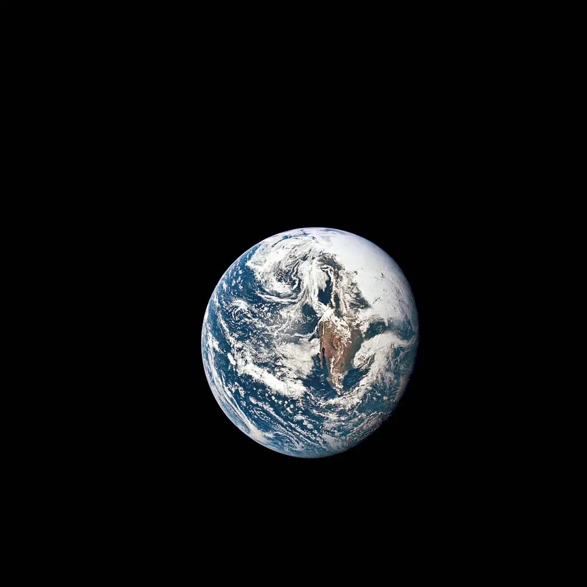

By Martha
 Searching for ALife on the internet before the internetDon’t ask me how I fell down the Whole Earth rabbit hole. (The actual internet must have led me there.) But I love how all the old issues are archived online in a way that emphasizes their physicality: each page scanned in color so you can practically smell the aging newsprint, and no searchable index, which forces you to hunt manually, page by page, just as if you were pawing through an actual issue in the library stacks.
Actually, I know how I found these — “A-Life” led me here, to the Fall 1992 issue, with Artificial Life featured on the cover. Wow. On p. 45, there’s an advert for a video: Artificial Life II, only $69 by mail. As I read the blurb describing the wonders of Panspermia, I feel a tiny pang that I’m living too far in the future to get my hands on this VHS tape… until a shift in perspective prompts me to search online, yielding Karl Sims' creation in its full glory on YouTube [!!!].
An article called “A-Life Nightmare” reads more like a dream. Danny Hillis says, “I want to live for 10,000 years. I've really got 10,000 years' worth of stuff to do…” and yes, I feel the same. Chris Langton asks about the purpose of life:
I think it goes to an extremely deep metaphysical question of what is the purpose of life, but not just human life. My feeling is that it is out of our control; we are just little cogs in a much bigger evolutionary process. We're little leaves being swept down the stream, and all we can hope to do is perturb ourselves to the right or to the left to influence the overall flavor of this evolutionary direction.I totally vibe with this. And then Steen Rasmussen talks about ideas becoming embodied and having lives of their own, and also how these ideas become our children. Very cool.
Maybe someday I will solve the mystery of how the Whole Earth Review people ended up attending at least the first two ALife workshops.